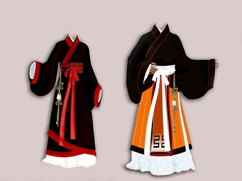
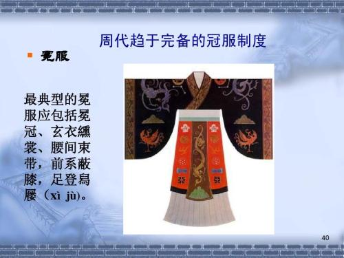
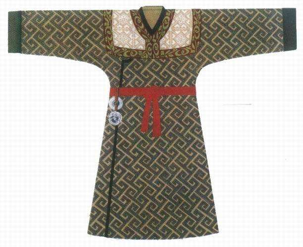

周代
西周的建立，使社会生产力大大发展和提高了，物质明显丰富起来，社会秩序也走向条理化，并有了规章制度。汉服服饰形制也由于尊卑等级的存在、礼仪的需要而进一步规范化，被纳入"礼治"范围，尊卑贵贱，各有分别。
上衣下裳：那时的常服还是上衣下裳为主流，款式不变。只不过袖日趋发展变大，形成大袖，祛袂款式。衣裳也逐渐变宽。
发型：当时西周的男子无论各地大部分都已将辫盘到头顶，而无商时披头散发的习惯，当然一些偏国除外，不过束发已成为全国统一推行的标准，对于汉民族男子千百年来的发式，起到了奠定作用。
这时候服饰的专用界限等级标志开始清晰，品种类别也相应地增加，像宫室中拜天地、敬鬼神时专有祭礼服，上朝大典时有朝会服，军事之中专有从戎服，婚嫁之仪专用婚礼服，吊丧时又有丧服。衣裳虽然还是采用上衣玄下裳黄，但在官职服饰中增加了裳前襟的大带（大带是用丝织或缂制成，宽四寸）、玉（以玉为原料，以丝带连系在腰间的挂饰）。另外在服色上也开始有了等级差别。西周的服式除宽衣长带的特有风格以外，还吸收了北方鲜卑族（今锡伯族）以带钩束腰的服饰花色（在丝带的接头处，以金、银、铜或铁等金属制成的精细的勾或扣）
冠服制度：西周最大的贡献以及对于后世的影响就是礼服制度（也叫冠服制度）的完善。西周时期的礼服制度也是上衣下裳款式，只不过头要戴冠（那时的各种冠已发展完善，并延续后世），衣裳要有等级，要有章纹，出现敝膝，组玉等相关礼服配件，这样完善的礼服系统一直延续到明。当时礼服的主要等级，有冕服弁服，之所以这样叫，取决于相关配套的冠的款式，比如戴冕就是冕服，戴弁就是弁服，他们仍旧是上衣下裳制，只不过是冠与章纹，配件等级的不同而已。冕服弁服作为礼服的高等级别，一直延续到明。只不过那时天子，诸侯王，公卿，大夫都可以都可以穿冕服，后来中央集权的加强，只天子，诸侯王能穿了。那时的女子礼服，王后已经开始穿翟衣，当时王后有六种翟衣类礼服。
- 
- 
- 

 服饰
服饰